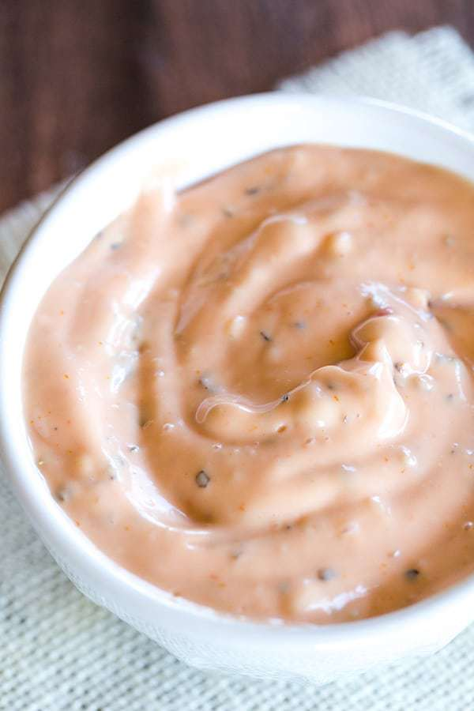

Classic Burger Sauce

If you dig the sauce on Big Macs or the “special sauce” that high-end sandwich joints slather on their burgers, you are going to LOVE this burger sauce!
- ½ cup (112 g) mayonnaise
- ¼ cup (60 g) ketchup
- 2 teaspoons sweet pickle relish
- 2 teaspoons granulated sugar
- 2 teaspoons white vinegar
- 1 teaspoon ground black pepper
- In a small bowl, whisk together all of the ingredients.
- Serve immediately, or refrigerate, covered, for up to 1 week.